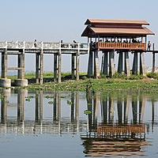

Clothing in Myanmar varies depending on the ethnicity, geography, climate and cultural traditions of the people of each region of Myanmar (Burma). The most widely recognized Burmese national costume is the longyi, which is worn by both males and females nationwide. Burmese clothing also features great diversity in terms of textiles, weaves, fibers, colors and materials, including velvet, silk, lace, muslin, and cotton.
6
Tourism

Since 1992, the government has encouraged tourism in the country; however, fewer than 270,000 tourists entered the country in 2006 according to the Myanmar Tourism Promotion Board. Myanmar's Minister of Hotels and Tourism Saw Lwin has stated that the government receives a significant percentage of the income of private sector tourism services.